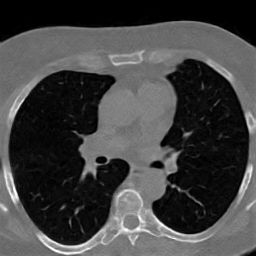
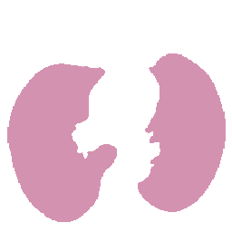
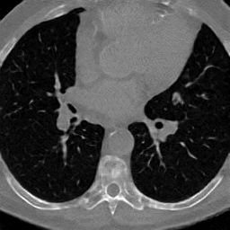
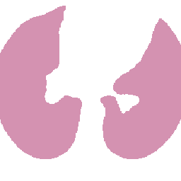

Anna Oliveras
Tous
Computer Vision MSc, currently a PhD researcher at Universitat de Barcelona & Eurecat, working on generative models and medical image synthesis. Based in Barcelona.
About
I hold a Master's degree in Computer Vision (UAB) and a Bachelor's in Telecommunications Engineering (UPC), and have built my expertise in signal processing, machine learning and deep learning through industry roles and research internships across Barcelona, Lausanne (LTS5, EPFL) and beyond. I'm currently a researcher in the Digital Health Unit at Eurecat, and a PhD candidate with the AIBA group at University of Barcelona, supervised by Prof. Petia Radeva and Dr. Vicent Ribas, focused on generative models for synthetic medical imaging. What draws me to the field is the chance to put AI to work on problems that matter clinically, alongside people who care about getting the details right.
Publications
Anatomically Guided Latent Diffusion for High-Resolution 3D Chest CT Synthesis
Scientific Reports by Nature
A latent diffusion model that generates high-resolution 3D chest CT volumes conditioned on anatomical masks — producing realistic, high-quality synthetic scans at a fraction of the usual computational cost.




Phase IV-AI LAND: 3D Thoracic CT Synthesis with Anatomical Guidance via Lung and Nodule Diffusion
CIDAI - Centre of Innovation for Data Tech and Artificial Intelligence · Presentation of Proofs of Concept in Data and AI
Invited talk presenting LAND's proof-of-concept.
Pre-processing for Automatic Cervical Cancer Screening: Image Segmentation and Movement Detection
MICAD 3rd Conference on Medical Imaging and Computer-Aided Diagnosis
Abstract oral presentation of the bachelor's thesis work carried out at LTS5, EPFL.
Phase IV-AI LAND: 3D Thoracic CT Synthesis with Anatomical Guidance via Lung and Nodule Diffusion
Phase IV-AI Project Ending Conference
Poster presenting LAND at the Phase IV-AI project's closing conference.
LAND: 3D Thoracic CT Synthesis with Anatomical Guidance via Lung and Nodule Diffusion
MedEurIPS Workshop: Medical Imaging meets EurIPS
Poster session presenting LAND alongside the oral paper presentation.